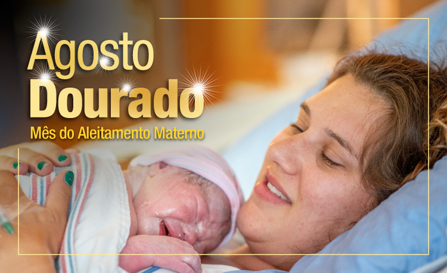

Campanha mundial de promoção e apoio à amamentação
O mês de agosto é dedicado ao Agosto Dourado, campanha que simboliza a luta pelo incentivo à amamentação. A cor dourada está relacionada ao padrão ouro de qualidade do leite materno, considerado o alimento mais completo e nutritivo para os bebês. A escolha do mês está vinculada à Semana Mundial do Aleitamento Materno, celebrada de 1 a 7 de agosto em mais de 120 países.
O aleitamento materno é reconhecido pela Organização Mundial da Saúde (OMS) e pelo Ministério da Saúde como a forma mais eficaz de proteção e nutrição para crianças de até dois anos de idade. O leite materno contém todos os nutrientes necessários para o desenvolvimento saudável do bebê, além de anticorpos que fortalecem o sistema imunológico e protegem contra diversas doenças.
Recomendações da OMS: A Organização Mundial da Saúde recomenda o aleitamento materno exclusivo até os seis meses de idade e complementado com outros alimentos até os dois anos ou mais. Essa prática pode salvar a vida de mais de 820 mil crianças menores de cinco anos por ano em todo o mundo.
Para o bebê, a amamentação oferece proteção contra infecções respiratórias, diarreias, alergias e obesidade infantil. Estudos demonstram que crianças amamentadas têm menor risco de desenvolver diabetes tipo 2, hipertensão e colesterol alto na vida adulta. Além disso, o ato de amamentar favorece o desenvolvimento da arcada dentária e da fala.
Para a mãe, amamentar reduz o risco de câncer de mama e de ovário, acelera a recuperação pós-parto, promove o vínculo afetivo com o bebê e contribui para a saúde mental materna. A amamentação também é econômica, prática e ecologicamente sustentável, pois não gera resíduos nem precisa de preparo.
Apesar dos inúmeros benefícios, muitas mulheres enfrentam dificuldades para amamentar, como dor, fissuras mamárias, baixa produção de leite, falta de apoio familiar e pressão social. O retorno ao trabalho também é apontado como um dos principais obstáculos à continuidade da amamentação exclusiva.
Por isso, o Agosto Dourado reforça a importância do apoio à lactante em todos os ambientes: família, comunidade, serviços de saúde e locais de trabalho. As empresas têm papel fundamental ao garantir salas de apoio à amamentação, licenças adequadas e flexibilidade para que as mães possam manter a amamentação mesmo após o retorno às atividades profissionais.
A Semana Mundial do Aleitamento Materno (SMAM), celebrada de 1 a 7 de agosto, foi criada em 1992 pela Aliança Mundial de Ação Pró-Amamentação (WABA) para promover a amamentação em todo o mundo. No Brasil, o Ministério da Saúde coordena as ações da campanha em parceria com estados, municípios e sociedade civil.
Durante a semana e ao longo de todo o mês, são realizadas diversas atividades como palestras, rodas de conversa, capacitação de profissionais de saúde, iluminação de monumentos em cor dourada e mobilizações nas redes sociais. O objetivo é sensibilizar a sociedade sobre a importância do aleitamento materno e criar uma cultura de apoio às lactantes.
Direitos da lactante: A legislação brasileira garante direitos importantes às mães que amamentam, como licença-maternidade de no mínimo 120 dias, dois intervalos de 30 minutos durante a jornada de trabalho para amamentar até o bebê completar seis meses, e salas de apoio à amamentação em empresas com mais de 30 funcionárias acima de 16 anos.
O Brasil possui a maior rede de bancos de leite humano do mundo, com mais de 220 unidades distribuídas por todo o país. Esses bancos coletam, processam e distribuem leite materno doado para bebês prematuros e de baixo peso que não podem ser amamentados por suas mães.
As Unidades Básicas de Saúde (UBS) oferecem acompanhamento pré-natal e pós-natal com orientações sobre amamentação. Profissionais capacitados, como enfermeiros, médicos e consultores em amamentação, estão disponíveis para ajudar as mães a superar dificuldades e garantir o sucesso da amamentação.
Muitos mitos ainda circulam sobre a amamentação, como a ideia de que o leite materno pode ser fraco ou insuficiente, ou que determinados alimentos aumentam ou diminuem a produção de leite. É importante que as mães recebam informações baseadas em evidências científicas e tenham acesso a profissionais qualificados para esclarecer dúvidas.
O leite materno é sempre adequado às necessidades do bebê, mudando sua composição conforme o crescimento da criança. A produção de leite funciona pela lei da oferta e demanda: quanto mais o bebê mama, mais leite é produzido. Por isso, a livre demanda, ou seja, amamentar sempre que o bebê quiser, é fundamental para o estabelecimento e manutenção da lactação.
O Agosto Dourado nos convida a refletir sobre a importância do aleitamento materno e a construir uma sociedade mais acolhedora e solidária com as mães que amamentam. Proteger, promover e apoiar a amamentação é responsabilidade de todos nós.